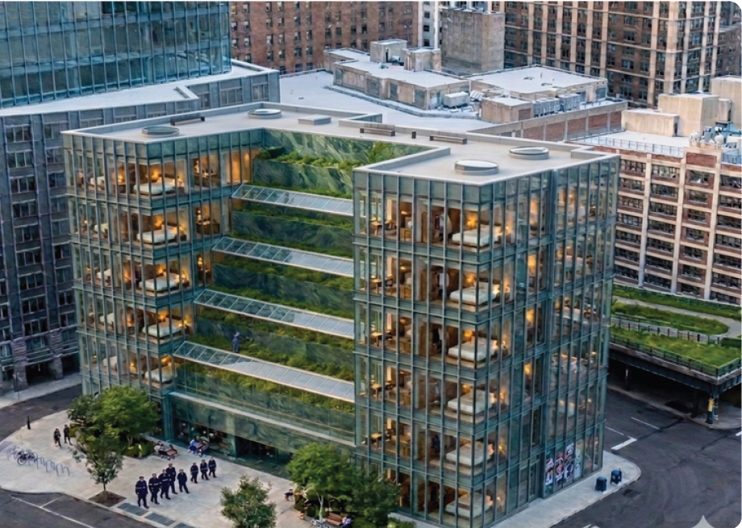
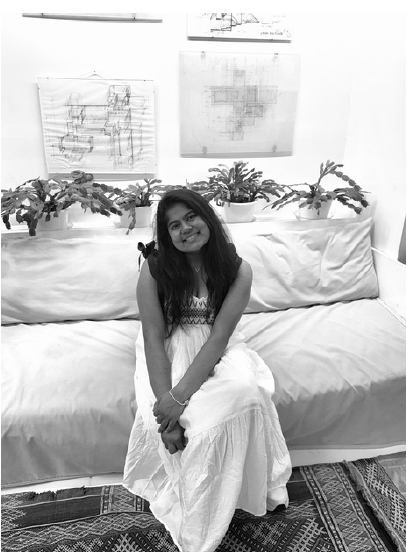

01
Ecological civic space
Liberty Rail Gardens
Rooted in the maritime history of Liberty State Park, a sequence of aquaponic farms and aquatic exhibition pavilions anticipates the site's eventual return to the bay.
Architecture portfolio · 2026
Designing adaptive, ecologically responsive spaces through research, narrative, and technical rigor.
Explore selected work
I approach architecture as a collective act of responsibility — one that can recover memory, support connection, and remain open to change.
Selected work
Ecological civic space
Rooted in the maritime history of Liberty State Park, a sequence of aquaponic farms and aquatic exhibition pavilions anticipates the site's eventual return to the bay.
Adaptive reuse
A new gallery reactivates the park's historic High Mound, preserving its spatial legacy while reconnecting art, garden, café, and landscape.
Hospitality + urban agriculture
A farm-to-table hotel where stepped cultivation terraces and guest spaces form a working ecosystem within Manhattan's dense urban fabric.
Flexible museum systems
Movable walls, modular railings, and a softwall accordion system let the museum shift between intimate exhibitions, performances, and large public programs.

About
I am a B.Arch candidate at the New Jersey Institute of Technology, focused on adaptive reuse, urban regeneration, and socially responsive design. My work combines site history, environmental analysis, and narrative with careful technical execution.
B.Arch, NJIT
2021 — 2026
Paul Rudolph Institute
Peter Coffin Studio
Speciality Structures USA
AutoCAD, Rhino + Grasshopper, SketchUp, Lumion, V-Ray, QGIS
Start a conversation
New Jersey / New York